if you do what everyone else does, you will not get hired.
1:1 mentorship to land your first data job
I'm Mark, a senior analytics engineer. I help students and early-career people build the profile a recruiter can't scroll past: projects nobody else has, a GitHub that proves your resume, a story only you can tell.
add me on LinkedIn with a note
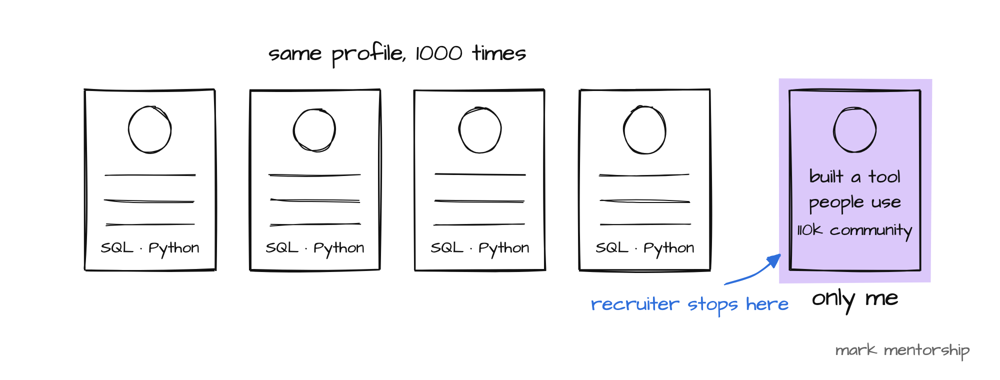
- 1,000+SQL problems solved
- 4,828GitHub contributions in a year
- 110,000+members in Xóm Data, which I moderate
- 4,900+downloads a month of qdbd, a tool I built
why me
In the final round for my data engineering internship at Lazard, I was up against Ivy League students. The offer email went to five .edu addresses — Penn, Brown, Cornell, Columbia, Columbia — and one personal Gmail. Mine. TCU isn't a target school.
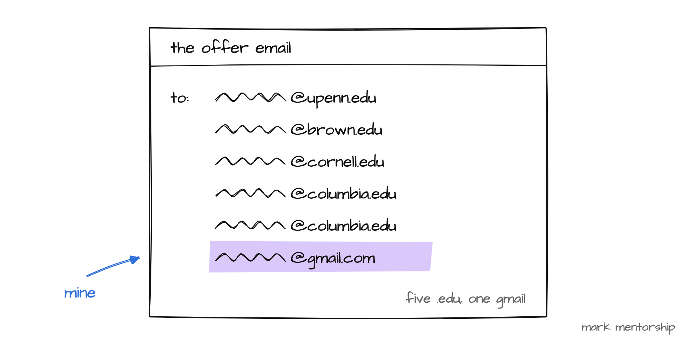
So how did I get the same offer? Not the school.
- I studied exactly the tech stack they used.
- I networked with people on the team before the interview.
- I spent two days studying Snowflake non-stop.
you won't out-school them. you can out-prepare them.
people I've taught
“He genuinely believes in his students and encourages us to think deeper instead of simply giving us the answers. He challenges us to be curious, ask better questions, and grow into more confident data professionals.”
“Mark is the kind of mentor that will push you forward and is very critical of your work — he will not let you look back on failures without lessons attached. I believe working with Mark is the fastest way to level up your skills in a corporate setting.”
“He took me from 0 to 1 — teaching me dbt, Airflow, and GitHub, and walking me through my first PR. As a business analyst with no prior data engineering experience, it was one of the most impactful months since I started working.”
“I've learned more technical skills from him than from everyone else combined.”
what my mentees built
One real pipeline, built together: 117,000 airline reviews scraped from Skytrax, staged on S3, loaded into Snowflake and modelled in dbt, run by Airflow and shipped with Terraform. Then each mentee took one airline and shipped a dashboard on top of it.
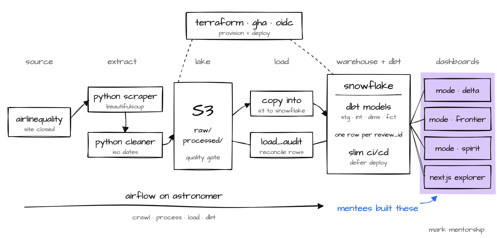
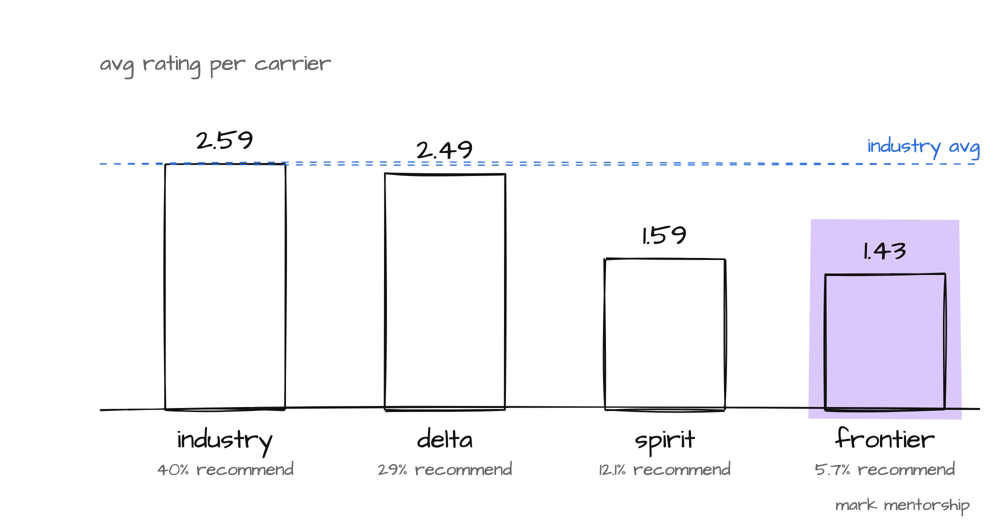
skytrax_reviews
Mark + mentees
The shared pipeline: scraper, S3, Snowflake, a dbt star schema, Terraform and slim CI/CD.
airline_customer_exp_analysis
Alyssa Le
Delta: why Economy and Premium passengers are happy for different reasons.
Skytrax-local-warehouse
Tony Dam
The same reviews on one laptop: DuckDB, dbt and Streamlit, no cloud.
sound familiar?
MySQL or Postgres? Power BI or Tableau? pip or uv? Everyone starting out freezes at the same tool choices — and none of them is the real question. The principles transfer; we pick one stack and move.
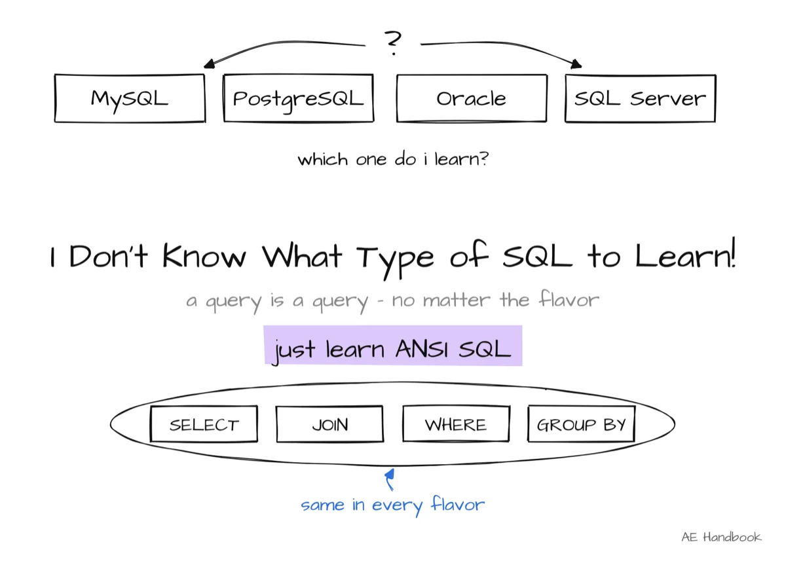
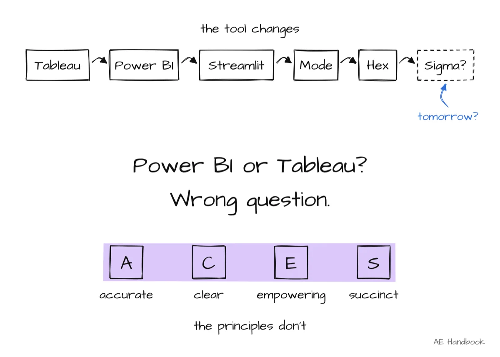
I've been exactly here. I struggled hard, with no direction.
I built this so you don't make the same mistake.
who it's for
Students and early-career people aiming at one of three tracks. You don't need experience: you need reps.
data analyst
SQL, dashboards people actually use, and analysis that answers a business question nobody asked you to answer.
analytics engineer
dbt, warehouses, tested models, and pipelines that turn raw data into decisions.
data engineer
Ingestion, orchestration, streaming, and infrastructure that keeps running after you log off.
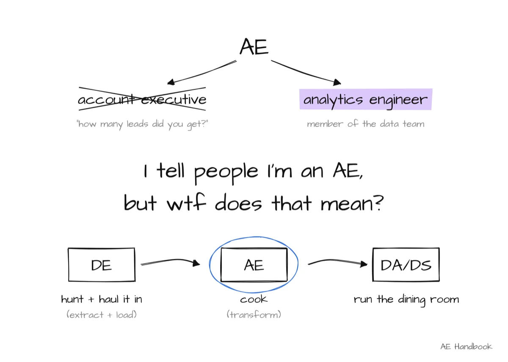
what we work on
Everything comes back to two questions. The copy-paste test: could 1,000 other candidates paste this line unchanged? The only-me test: what is true about you that isn't true about them?
The whole playbook is public on GitHub. The mentorship is where we apply it to you.
rules you'll hear a lot
- “a project is the only part of your application that isn't a claim.”
- “could you defend this claim for 10 minutes while a senior engineer drills into it?”
- “a Super Like on everything is the same as a Super Like on nothing.”
what I'll teach you
From the fundamentals to Spark: the SQL that solves 80% of problems, dbt and the modern warehouse, ingestion pipelines with zero infrastructure, and Spark for when the data outgrows one machine. It's all written down in the handbook — the mentorship is applying it to your project.
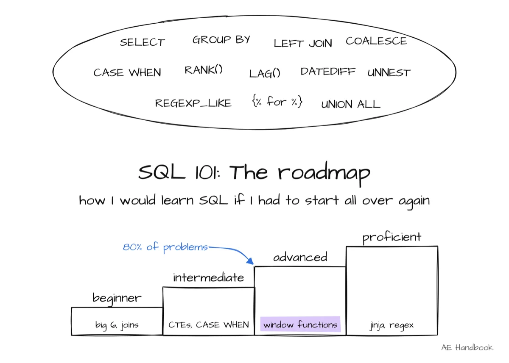
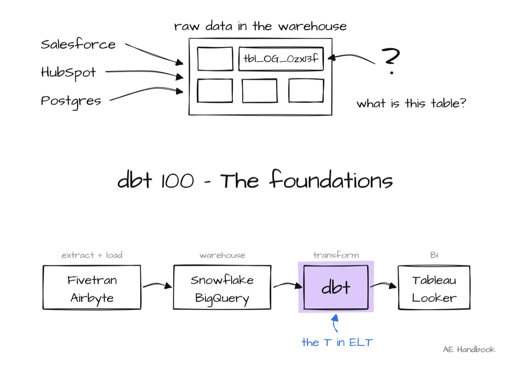
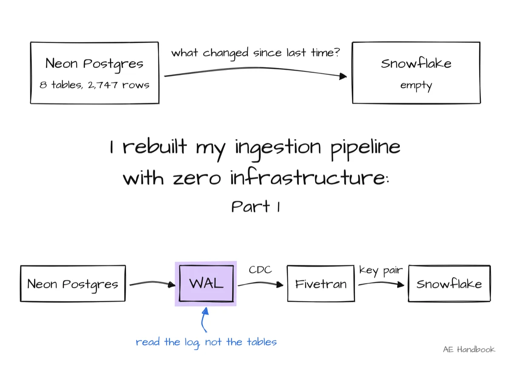
seven more: projects, resume, laptop setup, dbt 101 to 302, Spark
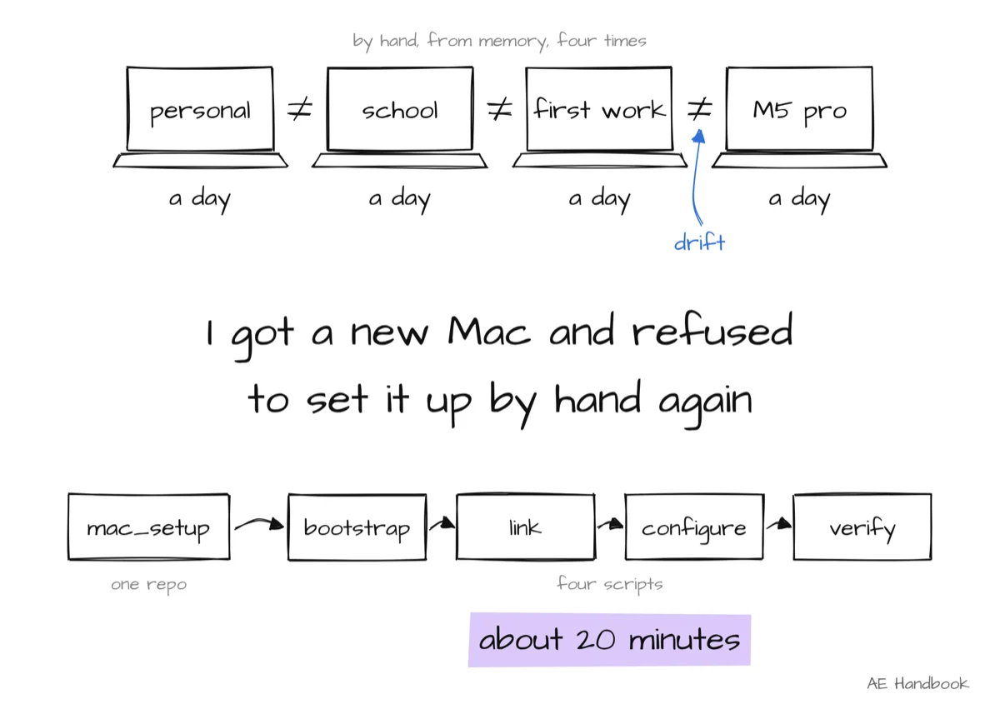
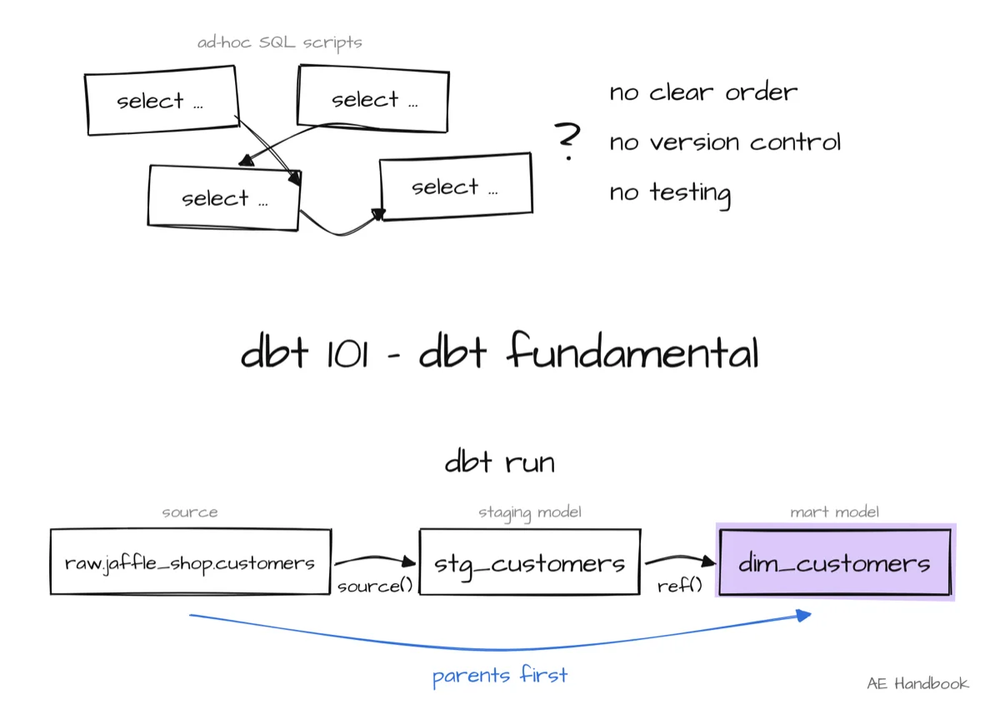
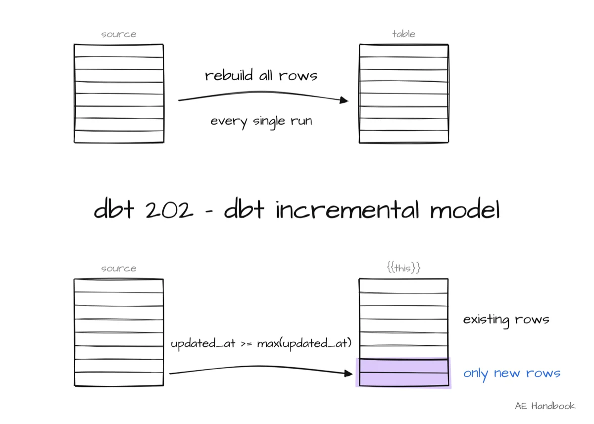
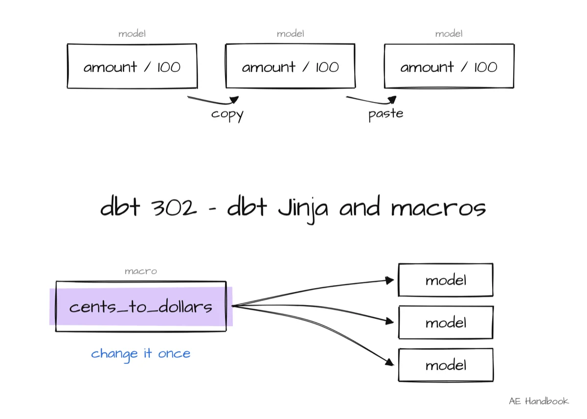
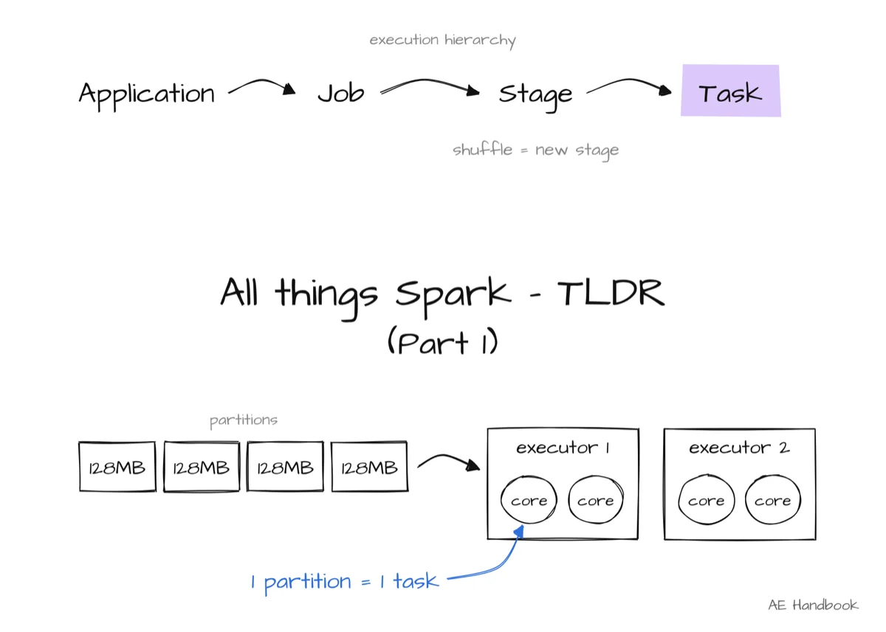
latest from the handbook
things I built that you can use today
I don't only talk about projects nobody else has. These are mine, and they're free.
qdbd
Turns QuickDBD, DBML or a dbt project into an ER diagram that stays readable at 200+ tables. 40 releases, 21 live demos.
CTE Diff
A VS Code extension: preview any dbt CTE and compare it on both sides of a diff. Try it in the browser playground.
dbt-Fundamental
One dbt project that runs on DuckDB or Snowflake. 40 stars, 12 forks.
dbt CI/CD course
Nine hands-on lessons, each with a checkpoint.
how it works
- add me with a noteConnect on LinkedIn and tell me who you are, which track you want, and where you're stuck.
- we talkA 30-minute intro call. If we're a fit, you join the mentee Slack.
- you do the repsYou work through the guides, build, and ship. Spotter, our Slack bot, posts everyone's GitHub commits daily — the group sees your reps.
- I review the hard partsSend work only after the checklist passes. Sessions go to the hard parts, not typos.

about Mark
Senior Analytics Engineer at Infinite Lambda — the youngest L6 there — and ex-Insurify and Lazard. I did three internships in two countries before my senior year, and I've been mentoring since 2020: a small academy that helped 20 Vietnamese students apply to US universities, the AE Academy for new hires at Insurify, and Ace Mentorships. I moderate Xóm Data, Vietnam's largest data learning community (110,000+ members), and write The Analytics Engineer's Handbook on Substack. I mentor because teaching is how I learn.
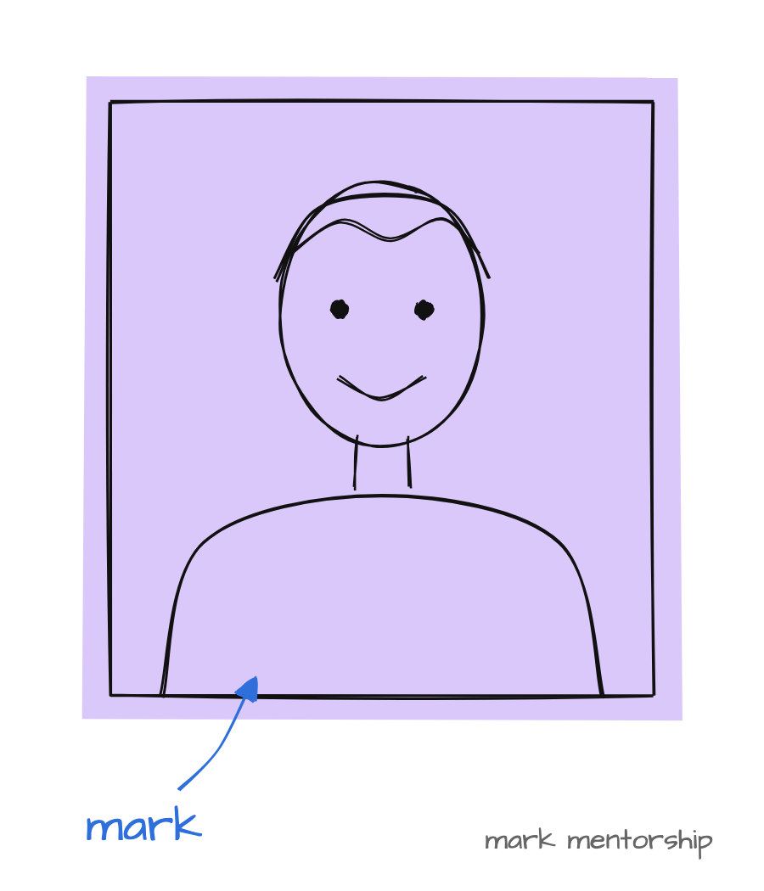
faq
do I need experience?
No. Most mentees are students or career-switchers. You need time to do the reps, not a data job.
what do sessions look like?
1:1 reviews of your profile, resume, portfolio, and projects — after you've run the checklists yourself.
how often do we meet?
Weekly, or more often when you need it.
how many mentees do you take?
Up to 10 at a time.
English or Vietnamese?
Both. The guides are in English; we talk in whichever you think in.
what happens after I get an offer?
You stay in the Slack. You keep access, and you can help the next mentees.
what does it cost, and how long does it take?
We go through cost, how long it takes and how many hours a week in our first 30-minute meeting.
how do I join?
Add me on LinkedIn with a note. That note is your first copy-paste test.
the note is the application
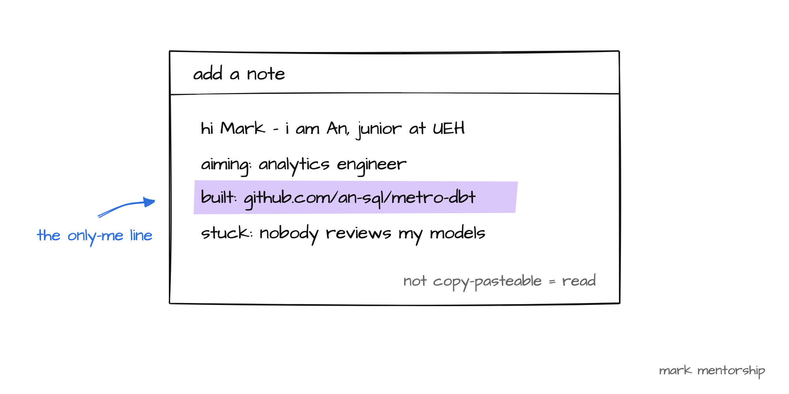